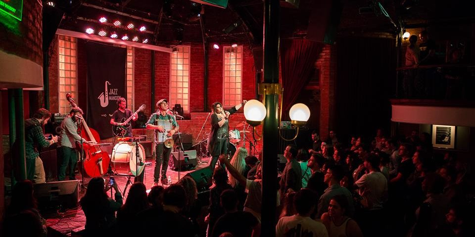
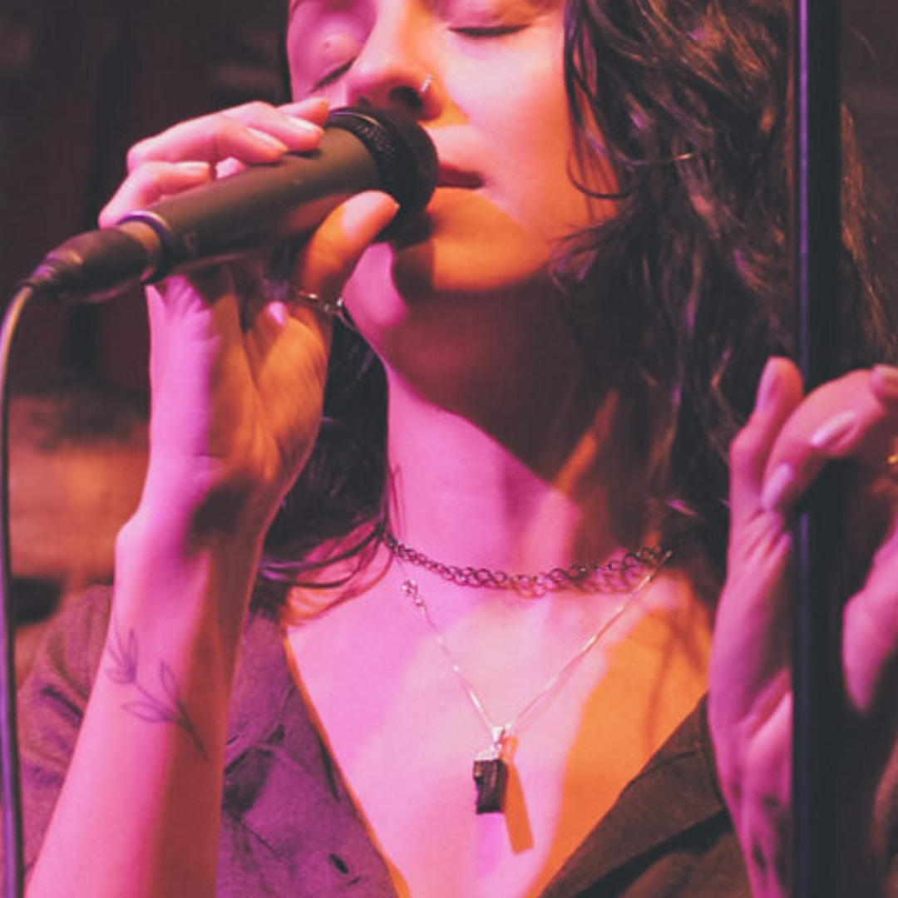
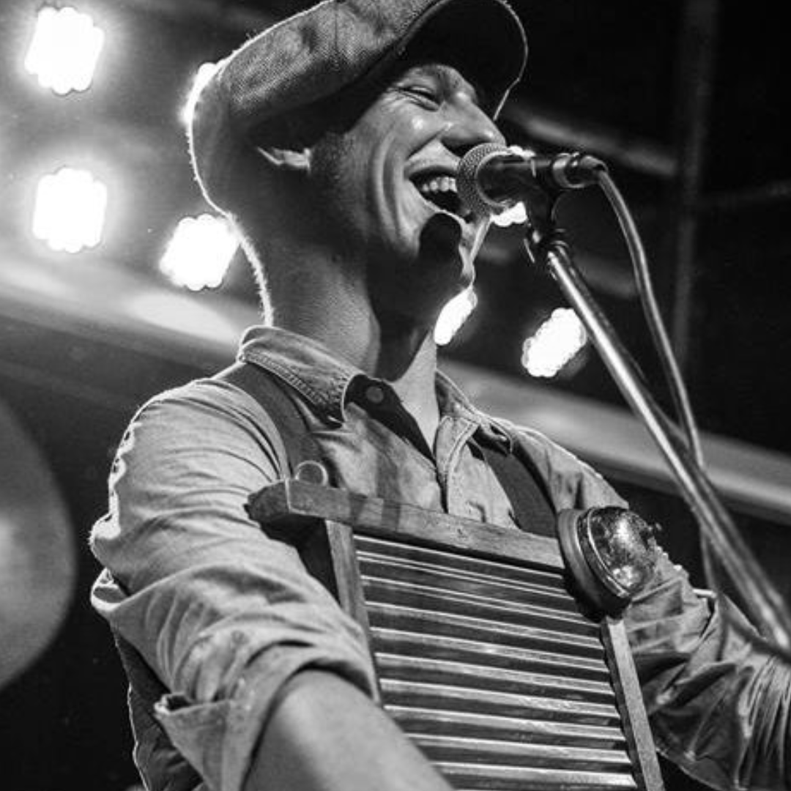
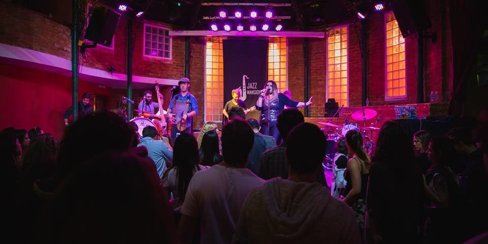

Gringo's Washboard Band
{{#lang pt}}Sobre a Gringo's Washboard Band{{/lang}}{{#lang en}}About Gringo's Washboard Band{{/lang}}
{{#lang pt}}Começou como um desafio. Em 2016, Zé "Gringo" Tábuas pediu emprestada a tábua de lavar da avó, uma caixa de dedais de costura e uma esquina da Baixa de Lisboa — e recusou-se a sair dali até alguém dançar. Alguém dançou. Depois juntou-se um tocador de banjo, a seguir um contrabaixo feito de uma tina e de um cabo de vassoura, e assim nasceu a Gringo's Washboard Band.{{/lang}} {{#lang en}}It started as a dare. In 2016, Zé "Gringo" Tábuas borrowed his grandmother's washboard, a box of sewing thimbles and a street corner in downtown Lisbon — and refused to leave until somebody danced. Somebody did. Then a banjo player joined, then a bass made from a washtub and a broomstick, and Gringo's Washboard Band was born.{{/lang}}
{{#lang pt}}“Tocamos a música que as pessoas faziam quando não tinham dinheiro para instrumentos. A ideia é essa — a alegria é barata, mas dá trabalho.”{{/lang}} {{#lang en}}“We play the music people made when they couldn't afford instruments. That's the whole idea — joy is cheap, but it takes work.”{{/lang}}
{{#lang pt}}Inspirados nas jug bands de Memphis, no hokum da Chicago dos anos 20 e no hot swing dos cafés de Paris, os cinco músicos passaram uma década a transformar bares, festivais e, de vez em quando, uma lavandaria em salões de baile. Os concertos são barulhentos, suados e impossíveis de ver sentado.{{/lang}} {{#lang en}}Inspired by the jug bands of Memphis, the hokum of 1920s Chicago and the hot swing of Parisian cafés, the five musicians have spent a decade turning bars, festivals and, now and then, a laundromat into dance halls. The shows are loud, sweaty and impossible to watch sitting down.{{/lang}}
{{#lang pt}}Rub-a-Dub Blues, o terceiro álbum de estúdio, foi gravado ao vivo em fita, ao longo de quatro dias, numa antiga fábrica de cortiça perto do Seixal. Doze canções — oito originais e quatro standards carinhosamente maltratados — captam a banda tal como soa num sábado à noite: um pouco sem fôlego e de sorriso rasgado.{{/lang}} {{#lang en}}Rub-a-Dub Blues, their third studio album, was recorded live to tape over four days in an old cork factory near Seixal. Twelve songs — eight originals and four lovingly mistreated standards — capture the band the way it sounds on a Saturday night: a little out of breath and grinning ear to ear.{{/lang}}
{{#lang pt}}"Uma vez experimentámos fazer overdubs," ri-se a banjoísta Rita Banjo. "Soava a uma banda. Nós queríamos que soasse a uma festa."{{/lang}} {{#lang en}}"We tried overdubs once," laughs banjo player Rita Banjo. "It sounded like a band. We wanted it to sound like a party."{{/lang}}

{{#lang pt}}A banda já andou em digressão por Portugal, Espanha, França e pelos Países Baixos, partilhou palcos tanto com orquestras de swing como com bandas punk e chegou a tocar num casamento dentro de um elétrico em andamento. Ainda anda à procura de uma sala que a aguente.{{/lang}} {{#lang en}}The band has toured Portugal, Spain, France and the Netherlands, shared stages with swing orchestras and punk bands alike, and once played a wedding aboard a moving tram. It is still looking for a room that can handle it.{{/lang}}

Zé "Gringo" Tábuas
{{#lang pt}}Tábua de lavar e voz{{/lang}}{{#lang en}}Washboard & vocals{{/lang}}
Rita Banjo
{{#lang pt}}Banjo e voz{{/lang}}{{#lang en}}Banjo & vocals{{/lang}}
Tiago Cordas
{{#lang pt}}Guitarra{{/lang}}{{#lang en}}Guitar{{/lang}}
Nuno Tina
{{#lang pt}}Contrabaixo de tina{{/lang}}{{#lang en}}Washtub bass{{/lang}}
Inês Sopro
{{#lang pt}}Kazoo e harmónica{{/lang}}{{#lang en}}Kazoo & harmonica{{/lang}}Gringo's{{#lang pt}}MEMBROS{{/lang}}{{#lang en}}MEMBERS{{/lang}}
Oh Yeah Baby!
{{#lang pt}}Média{{/lang}}{{#lang en}}Media{{/lang}}


{{#lang pt}}Ao Vivo no Lavadouro{{/lang}}{{#lang en}}Live at the Washhouse{{/lang}}
{{#lang pt}}Gravado num só take num lavadouro público do século XIX, em Lisboa: doze canções, cinco músicos, zero overdubs e um zelador muito confuso.{{/lang}} {{#lang en}}Recorded in a single take in a 19th-century public washhouse in Lisbon: twelve songs, five musicians, zero overdubs and one very confused caretaker.{{/lang}}
{{#lang pt}}Agenda{{/lang}}{{#lang en}}Tour Dates{{/lang}}

{{#lang pt}}Segue a banda para receberes novidades sobre concertos e transmissões em direto.{{/lang}}{{#lang en}}Follow the band for news about gigs and live streams.{{/lang}}
- {{#lang pt}}Sex, 6 nov{{/lang}}{{#lang en}}Fri, 6 Nov{{/lang}} {{#lang pt}}Festa de Lançamento de Rub-a-Dub Blues{{/lang}}{{#lang en}}Rub-a-Dub Blues Release Party{{/lang}} {{#lang pt}}Lisboa{{/lang}}{{#lang en}}Lisbon{{/lang}}, PT {{#lang pt}}Informações{{/lang}}{{#lang en}}Info{{/lang}}
- {{#lang pt}}Sáb, 7 nov{{/lang}}{{#lang en}}Sat, 7 Nov{{/lang}} Hot Club de Portugal {{#lang pt}}Lisboa{{/lang}}{{#lang en}}Lisbon{{/lang}}, PT {{#lang pt}}Informações{{/lang}}{{#lang en}}Info{{/lang}}
- {{#lang pt}}Qui, 12 nov{{/lang}}{{#lang en}}Thu, 12 Nov{{/lang}} Casa da Música — {{#lang pt}}Sala 2{{/lang}}{{#lang en}}Room 2{{/lang}} Porto, PT {{#lang pt}}Informações{{/lang}}{{#lang en}}Info{{/lang}}
- {{#lang pt}}Sex, 13 nov{{/lang}}{{#lang en}}Fri, 13 Nov{{/lang}} Salão Brazil Coimbra, PT {{#lang pt}}Informações{{/lang}}{{#lang en}}Info{{/lang}}
- {{#lang pt}}Sáb, 14 nov{{/lang}}{{#lang en}}Sat, 14 Nov{{/lang}} Theatro Circo Braga, PT {{#lang pt}}Informações{{/lang}}{{#lang en}}Info{{/lang}}
- {{#lang pt}}Qui, 19 nov{{/lang}}{{#lang en}}Thu, 19 Nov{{/lang}} Café Berlin Madrid, ES {{#lang pt}}Informações{{/lang}}{{#lang en}}Info{{/lang}}
- {{#lang pt}}Sex, 20 nov{{/lang}}{{#lang en}}Fri, 20 Nov{{/lang}} Jamboree Jazz Club Barcelona, ES {{#lang pt}}Informações{{/lang}}{{#lang en}}Info{{/lang}}
- {{#lang pt}}Sáb, 21 nov{{/lang}}{{#lang en}}Sat, 21 Nov{{/lang}} Le Caveau de la Huchette Paris, FR {{#lang pt}}Informações{{/lang}}{{#lang en}}Info{{/lang}}
- {{#lang pt}}Ter, 24 nov{{/lang}}{{#lang en}}Tue, 24 Nov{{/lang}} Paradiso — {{#lang pt}}Sala Pequena{{/lang}}{{#lang en}}Small Hall{{/lang}} {{#lang pt}}Amesterdão{{/lang}}{{#lang en}}Amsterdam{{/lang}}, NL {{#lang pt}}Informações{{/lang}}{{#lang en}}Info{{/lang}}
- {{#lang pt}}Qui, 26 nov{{/lang}}{{#lang en}}Thu, 26 Nov{{/lang}} The Jazz Café {{#lang pt}}Londres{{/lang}}{{#lang en}}London{{/lang}}, UK {{#lang pt}}Informações{{/lang}}{{#lang en}}Info{{/lang}}
- {{#lang pt}}Sáb, 5 dez{{/lang}}{{#lang en}}Sat, 5 Dec{{/lang}} Washboard Winter Festival {{#lang pt}}Gante{{/lang}}{{#lang en}}Ghent{{/lang}}, BE {{#lang pt}}Informações{{/lang}}{{#lang en}}Info{{/lang}}
- {{#lang pt}}30 dez – 2 jan 2027{{/lang}}{{#lang en}}30 Dec – 2 Jan 2027{{/lang}} {{#lang pt}}Cruzeiro Swing de Ano Novo{{/lang}}{{#lang en}}New Year's Swing Cruise{{/lang}} {{#lang pt}}Lisboa{{/lang}}{{#lang en}}Lisbon{{/lang}} → Funchal {{#lang pt}}Informações{{/lang}}{{#lang en}}Info{{/lang}}
- {{#lang pt}}Sáb, 12 set{{/lang}}{{#lang en}}Sat, 12 Sep{{/lang}} Festa do Avante — {{#lang pt}}Palco Arraial{{/lang}}{{#lang en}}Arraial Stage{{/lang}} Seixal, PT {{#lang pt}}Informações{{/lang}}{{#lang en}}Info{{/lang}}
- {{#lang pt}}Sáb, 8 ago{{/lang}}{{#lang en}}Sat, 8 Aug{{/lang}} Festival Sons de Vez Arcos de Valdevez, PT {{#lang pt}}Informações{{/lang}}{{#lang en}}Info{{/lang}}
- {{#lang pt}}Sex, 17 jul{{/lang}}{{#lang en}}Fri, 17 Jul{{/lang}} Blues in the Park Évora, PT {{#lang pt}}Informações{{/lang}}{{#lang en}}Info{{/lang}}